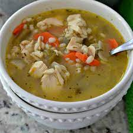

Chicken Barley Soup
from The Bais Yaakov Cookbook

The ultimate one pot meal!
In addition to being delicious, this is a
perfectly balanced meal served from one pot!
Ingredients
- 1/4 cup oil
- 1 medium onion, diced
- 3 carrots, diced
- 3-4 stalks of celery, diced
- 1 whole parsnip
- about 1 lb skinless boneless chicken breast
- 3/4 cup pearl barley, uncooked
- 1-2 teaspoons salt
- 1/2 teaspoon ground black pepper
- 10-12 cups water
Steps
- Place oil in large stock pot over medium heat.
Add onion and saute about 5 minutes, until transparent.
Add carrots and celery and saute another 5 minutes.
- Add parsnip, chicken breast, and barley to pot.
Add salt, pepper, and water to cover.
- Bring soup to a boil. Cover and reduce heat
to medium low. Simmer 4 to 5 hours.
- Remove parsnip and shred chicken before serving.
Back To Top
Home